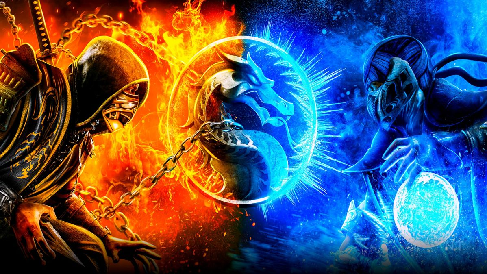

Arena Mortal Kombat
Em Mortal Kombat, cada duelo é uma prova de força, reflexo e estratégia. Escolha seu guerreiro, domine seus combos e enfrente adversários em batalhas cheias de ação e adrenalina.
Mostre quem manda na arena — apenas os mais habilidosos alcançam a vitória... e a glória final

Saga mortal Kombat
" A saga Mortal Kombat nasceu em 1992, criada pela Midway Games, e rapidamente se tornou uma das franquias de luta mais lendárias da história dos videogames. O enredo gira em torno de um torneio milenar que decide o destino da Terra (Earthrealm), disputado contra guerreiros de outros reinos como Outworld, Netherrealm e Edenia.
O Deus do Trovão, Raiden, protege o reino da Terra, reunindo campeões como Liu Kang, Kung Lao, Sonya Blade, Johnny Cage e Jax para enfrentar os servos do imperador Shao Kahn e o feiticeiro Shang Tsung. Entre os personagens mais icônicos estão também Scorpion e Sub-Zero, rivais eternos marcados por tragédias e vingança.
Com o passar dos anos, a saga evoluiu com novas histórias, dimensões e reviravoltas. Em 2011, a franquia foi rebootada, reiniciando a linha do tempo após os eventos de Armageddon. Esse novo começo trouxe gráficos modernos e uma narrativa cinematográfica, expandida em Mortal Kombat X e Mortal Kombat 11, onde os guerreiros enfrentam ameaças como Shinnok, Kronika e até versões alternativas de si mesmos.
Em Mortal Kombat 1 (2023), o ciclo recomeça mais uma vez, com Liu Kang recriando o universo em busca de paz — mas, como sempre, novos conflitos surgem e o torneio nunca termina por completo.
Mais que uma série de jogos, Mortal Kombat é uma lenda dos games, marcada por combates intensos, histórias profundas e o grito que define gerações:
“Finish Him!”

Personagens poderes
"ü¶Ç Scorpion (Hanzo Hasashi)
Poderes: Manipulação do fogo infernal, teletransporte e uso de correntes com lâmina (“Get over here!”).
Origem: Guerreiro do clã Shirai Ryu, renascido como espectro em busca de vingança contra Sub-Zero.
❄️ Sub-Zero (Bi-Han / Kuai Liang)
Poderes: Controle do gelo, podendo congelar inimigos, criar armas e escudos de gelo.
Origem: Ninjas do clã Lin Kuei, jurados rivais dos Shirai Ryu.
⚡ Raiden
Poderes: Deus do trovão, com domínio sobre relâmpagos, teletransporte e voo.
Origem: Protetor do reino da Terra (Earthrealm).
üêâ Liu Kang
Poderes: Artes marciais aprimoradas com energia de fogo e dragões espirituais.
Origem: Monge Shaolin e campeão do torneio Mortal Kombat.
üï∂Ô∏è Johnny Cage
Poderes: Energia verde mística, golpes rápidos e carisma de astro de cinema.
Origem: Ator de filmes de ação que virou verdadeiro herói.
üí• Sonya Blade
Poderes: Dispositivos tecnológicos, energia explosiva e alta habilidade em combate corpo a corpo.
Origem: Major das Forças Especiais da Terra.
☠️ Shang Tsung
Poderes: Feiticeiro capaz de roubar almas e se transformar em outros lutadores.
Origem: Servo de Shao Kahn e manipulador dos torneios.
üëë Shao Kahn
Poderes: Força sobre-humana, magia sombria e domínio sobre Outworld.
Origem: Imperador tirano que busca conquistar todos os reinos.
üî• Kitana
Poderes: Leques de aço letais e ataques com energia azul.
Origem: Princesa de Edenia, treinada desde jovem para lutar.
üíÄ Mileena
Poderes: Velocidade, agilidade e mordidas ferozes com dentes monstruosos.
Origem: Clone de Kitana criado por Shang Tsung.
üå™Ô∏è Kung Lao
Poderes: Chapéu afiado mágico, teletransporte e ataques com energia espiritual.
Origem: Monge Shaolin e descendente do herói original de Mortal Kombat.
üßõ‚Äç‚ôÇÔ∏è Noob Saibot
Poderes: Controle das sombras e invocação de clones sombrios.
Origem: O Sub-Zero original, renascido das trevas.